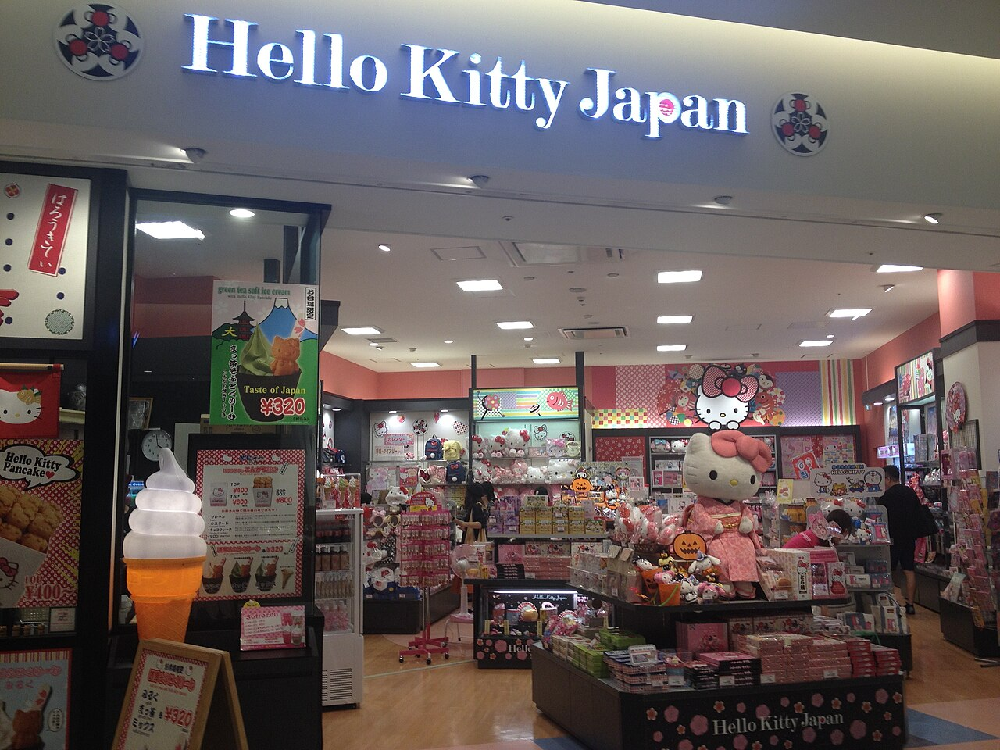
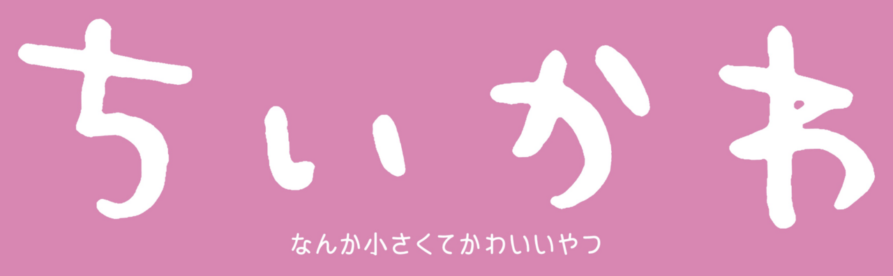

Japan with
Japan withIn a Japanese shop, “character goods” can mean a notebook carried to school, a charm clipped to a business bag, a train design, a café plate or a plush companion photographed at dinner. The character travels through ordinary life. That mobility matters more than any single plot.
Kawaii (かわいい) is usually translated as “cute,” but a 2025 Japanese government interview with Meiji University researcher Kyoko Koma describes a culture shaped by eras, scripts, regions, media and individual tastes. It spreads not only from companies downward but through fans who style, collect, photograph and reinterpret it. Kawaii is something people do as well as something they see.
Hello Kitty began as an object, not a story

Sanrio designed Hello Kitty in 1974 and released the first product—a small vinyl coin purse—in 1975. That order is revealing. She did not become merchandise after readers loved a film or comic. The compact object came first. A simple face could accompany a gift, pencil case or lunch without demanding that the owner know a complicated canon.
Sanrio’s official profile gives her a name, Kitty White, a home in suburban London, a twin sister and a height of five apples. Her left-ear ribbon symbolizes friendship. Yet the design remains open. With no drawn mouth, her expression can appear to shift with the viewer’s mood. That familiar reading is a design affordance: less fixed expression leaves more room for projection.
Sanrio built communication into the business
Sanrio’s corporate philosophy is Minna Nakayoku, translated by the company as “Getting Along Together.” Founder Shintaro Tsuji described social-communication and gift products as tools for extending friendship. The tiny purse was therefore more than a surface: a low-cost gift could carry a social message larger than itself.
The company says it has introduced more than 450 characters. My Melody, Cinnamoroll, Kuromi, Pompompurin, Gudetama and Aggretsuko offer different moods. Fans do not simply buy “cute”; they choose an energy they want to carry. Gudetama’s exhaustion and Aggretsuko’s workplace rage enlarge the vocabulary beyond cheerfulness.
There is a commercial truth too. Characters are intellectual property, and licensing turns recognition into products across prices and countries. Self-expression happens inside a managed market. Kawaii can connect, but collecting can also create expense, clutter, artificial scarcity and fear of missing limited releases. Affection does not cancel commerce.
Rilakkuma makes doing nothing visible
Rilakkuma appeared in September 2003. San-X’s official description is wonderfully strange: a bear costume whose unknown occupant suddenly settles in the home of office worker Kaoru. The zipper on its back matters. Rilakkuma is not pretending to be natural; the comfort is knowingly constructed.
Its priorities are food, naps and moving as little as possible. In a culture where diligence is highly visible, that laziness can feel like permission. Rilakkuma does not defeat overwork with a speech. It occupies the sofa. Its power is not heroic rebellion but the normalization of pause.
A zipper, an unfinished task and a pancake can carry an adult feeling that a smiling baby animal cannot.
San-X says its characters combine visual cuteness with surreal humor and a gentleness that stays close to people’s feelings. Rilakkuma’s mystery prevents the idea from becoming too literal. Who is inside? The question stays unanswered, so almost anyone can imagine being the tired person in the suit.
Chiikawa places cuteness under pressure

Nagano’s Chiikawa: Nanka Chiisakute Kawaii Yatsu began online in 2020 and is published by Kodansha. Its title contracts “something small and cute,” but the world is not reliably safe. Chiikawa and friends study for qualifications, take jobs, earn rewards, lose things, confront transformations and sometimes survive by luck.
The contrast changes what vulnerability means. A tiny character’s fear is not dismissed as weakness; fear becomes the condition under which friendship and persistence matter. Hachiware’s optimism does not erase danger. Chiikawa’s tears do not stop action. In 2024 the Japan Cartoonists Association awarded the series its grand prize in the manga division. Kodansha’s title page reports more than five million copies in circulation as checked October 2026.
Official introduction from Kodansha’s Comic Days channel. The TV anime began April 4, 2022; its official site credits Nagano and animation studio Doga Kobo.
Four designs, four emotional jobs
These are editorial readings, not a ranking. The useful comparison is structural: each design withholds something. Kitty withholds a fixed expression; Rilakkuma withholds an identity; Chiikawa withholds the guarantee that cuteness will be protected. The audience completes the emotional circuit.
How to experience character culture in Japan
Begin with everyday retail. Stationery floors, capsule-toy areas, convenience-store campaigns and railway collaborations show how characters enter routine. Official stores offer deeper selections, while Sanrio Puroland in Tokyo and Harmonyland in Oita turn relationships into live entertainment. Check official sites before traveling: timed entry, lotteries, stock rules and café reservations change.
Notice who is shopping and what object carries the design. A tiny office accessory does different work from a collector’s figure. Distinguish temporary cafés from permanent venues. Resale prices are not official value, and “limited” does not guarantee rarity. Photograph only where allowed; a display does not permit commercial reuse.
Learn かわいい, kawaii. It can mean endearing, lovable, stylishly cute or unexpectedly charming depending on context. Practice the script and sound free, without signup, in the Japanese Training Lab.
The softness is the technology
Kawaii is sometimes framed as escape. That is only half right. Hello Kitty rides on reality as an object shared between people. Rilakkuma names fatigue by refusing urgency. Chiikawa makes insecurity visible without surrendering friendship. Smallness is not an absence of seriousness. It is a delivery system.
That is why characters cross ages and borders without meaning exactly the same thing everywhere. A fan supplies memory; a company supplies a repeatable form; a community remixes the meaning. Kawaii lasts when a character is specific enough to recognize and open enough to live beside someone else’s feeling.
Sources and further reading
- Sanrio — Hello Kitty profile
- Sanrio — philosophy and character portfolio
- Sanrio — founder’s message
- San-X — Rilakkuma profile
- San-X — company history
- Kodansha Morning — Chiikawa
- Chiikawa anime — official site
- Kodansha — editions, circulation and award
- Highlighting Japan — evolving kawaii culture
Character names and trademarks belong to their owners. This independent analysis is not sponsored by them.

Spot character culture in real Japan.
Walk Japan with me on TikTok LIVE, then learn through play in DraMap for iPhone.
Japan Unfolded is independently edited by Yuji Shimizu, creator of DraMap. The app link is publisher promotion; the framework is editorial judgment.